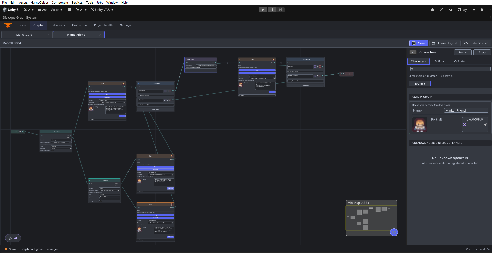

Quick Tutorial: Build and Play a Branching Dialogue
In this walkthrough you will create a graph, connect a question and two responses, register it with a scene manager, and launch it from a button.
What you need
Dialogue Graph System 4.0 imported into a Unity 6000.3-or-newer project, UGUI resolved, and TMP Essential Resources imported if Unity has not already set them up. AI Providers is not needed for this tutorial.
Create the graph
- Choose Tools > Beka Forge > Dialogue Graph System > Open Editor. The workspace opens on Home, where you can create a graph.
- Enter
GatekeeperIntroin Name and select Create & Open. - In the graph canvas, right-click and create a Dialog node. Give it a title such as
Question, a speaker such asGatekeeper, and line text: “What brings you to the gate?” - Create a Choice node and connect the Dialog node to it. Put the question in the preceding Dialog line; the active Choice card provides answer rows, not a prompt field.
- Edit the initial answer row to “I have a pass.”, then choose + Add Option once and set the new row to “I need directions.” The editor assigns and maintains each answer ID.
- Create one Dialog node for each response. Put a short acknowledgement in each. Connect the first answer output to the pass response and the second to the directions response. Connect both response outputs to the graph's End node.
- Connect Start to the first Dialog node. The graph editor creates and maintains the Start and End boundary nodes; you do not need to add them yourself.
- Choose Save. If you want to check the graph, show the graph sidebar, choose Validate, then select Validate Graph. Review any errors or warnings before testing the scene.
Expected result: the graph has one entry path, two distinct answer branches, and both branches reach End.

Try the Home example: enter a graph name in the Graph name field and choose Create & Open. This opens an example confirmation flow only; it does not create the tutorial graph.
Try the Dialog example: edit Speaker and Dialog to the Gatekeeper values above; observe the node card update. This browser state is separate from the Unity graph.
Try the Choice example: edit the first answer row, then click + Add Option and edit the new row. The preview adds an answer row; it does not create graph links or save an asset.
Register the graph for playback
- Drag
Assets/DialogGraphSystem/Resources/Prefabs/DialogueManager.prefabinto the scene. - Select its Dialog Manager component. Under Dialog Graphs, add one row, assign
GatekeeperIntro, and entergatekeeper_introas its Dialog ID. - Keep the UI references supplied by the prefab unless you are intentionally replacing the runtime UI. See Runtime UI setup before changing those references.
- Add
DialogPlayerto a scene object. On your UI Button, add that object to On Click (), select DialogPlayer > StartDialog (string), and entergatekeeper_intro.
Try the manager example: expand Dialogue Graphs, open the sample Dialog Graphs row, and edit Dialog ID. The graph reference is read-only in this browser example; Unity scene wiring remains a separate step.
Try it in Unity
Press Play and click the button. The gatekeeper should ask the question. Select either answer and confirm its matching acknowledgement appears before the conversation ends.
Check the authored setup
- Confirm the graph is assigned in the manager registry and its Dialog ID matches the button exactly.
- Use the graph sidebar’s Validate tab and Validate Graph action to review this graph’s errors, warnings, and information messages. Compare the Dialog ID with the manager registry as a separate setup check.
- Confirm the scene contains an active DialogueManager and its runtime UI is assigned.
- If one answer never appears, inspect the Choice node's answer rows and confirm each output is connected to the intended branch.
For a no-code launch path, see Getting Started. For the manager's code and event surface, see DialogManager.